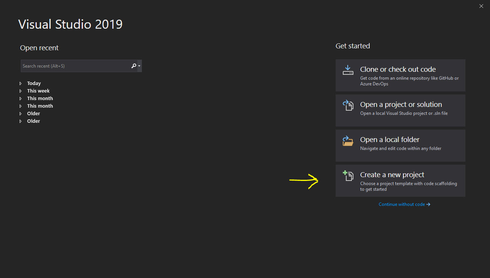
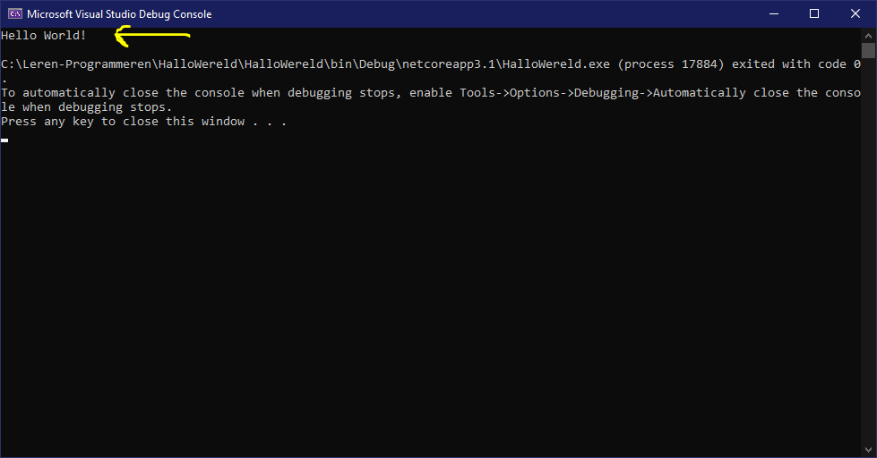
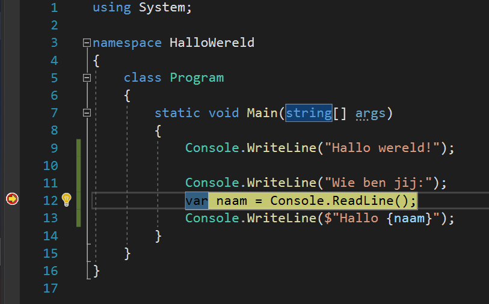
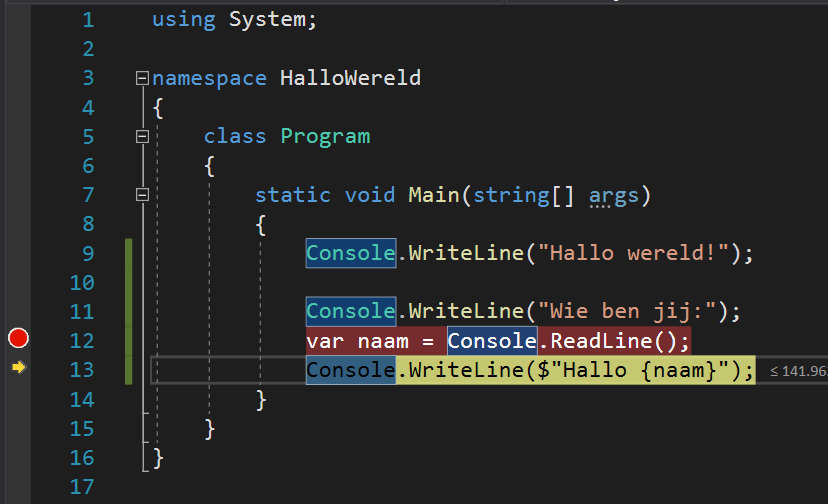
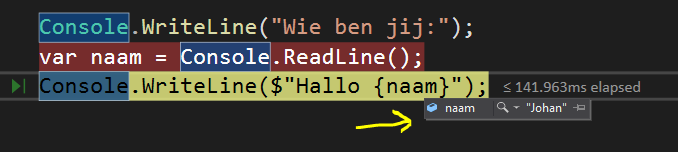
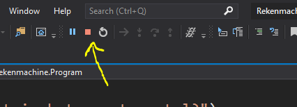

Note: This repos contains a work instruction for children to learn how to program. It is written in Dutch so the children are able to undertand.

Als je deze werkbeschrijving uitgeprint hebt maar je vindt het makkelijker om op de computer ook te kunnen gebruiken dan kan je naar de volgende website om via internet te bekijken:
https://tinyurl.com/LerenProgrameren
of
https://github.com/jjherscheid/leren-programmeren
In deze document wordt uitgelegd hoe programmeren werkt. Nadat je deze werkinstructie hebt gevolgd zou je zelf een beetje kunnen programmeren. Het doel is om kinderen enthousiast te maken voor het vak programmeren.
Programmeren is iets wat je in stappen moet leren, daarom is deze werk instructie ook opgedeeld in een aantal stappen. Dit is gedaan met het idee dat je zo van een makkelijke applicatie naar een wat moeilijkere applicatie kan groeien. Ik wil je meenemen in de volgende soort applicaties:
Er zijn een heleboel verschillende programmeertalen. Het is eigenlijk haast niet mogelijk om die allemaal te kennen. Een aantal van de belangrijkste programmeertalen zijn:
Waarom zijn er nu zoveel verschillende programmeertalen vraag je je misschien af. Elke taal is uitgevonden omdat mensen een andere taal minder goed vonden. Maar ook zijn sommige talen geschikt om websites mee te maken en andere juist weer om applicaties mee te maken. Als je eenmaal een programmeertaal goed kent dan is het vaak ook minder lastig om een andere taal te leren.
Omdat we toch een keuze moeten maken kiezen we in deze werkbeschrijving voor C#. Wil je liever in Python en/of Scratch programmeren dan is misschien het boek "Programmeren voor kinderen" wel een leuk boek om te kopen.
Om te leren te programmeren heb je natuurlijk een computer nodig waarop je kan en mag programmeren. Voor het maken van kleine applicaties heb je helemaal niet zo veel nodig. Vraag wel je ouders even of je op de computer mag programmeren en of ze je willen helpen met het instaleren van de programma's die je nodig hebt.
Het is handig om een vaste plek op je computer te hebben waar je de bestanden neer kan zetten. In alle voorbeelden ga ik ervan uit dat er een mapje op de computer is waar je de bestanden neer mag zetten. Als je niet weet hoe het werkt moet je misschien even aan papa of mama vragen of ze op de computer een mapje aanmaken. Voor de voorbeelden is het het makkelijkst als er een mapje is op de volgende plek:
Let op: Als je een andere plek gebruikt voor je bestanden dan moet je in de voorbeelden die gegeven wordt even zelf in de gaten houden dat je het op de goede plek neerzet.
Laten we nu maar eens echt beginnen met programmeren. Voor de eerste stappen hebben we alleen 'Visual Studio' nodig.
Laten we gaan beginnen met 'Hallo wereld'. Dit is een kleine applicatie die deze tekst laat zien wanneer je het opstart. Ook gaan we nog wat aanpassingen doen zodat de applicatie weet wie jij bent en dat hij jou (of iemand anders) ook gedag kan zeggen.
Start Visual Studio op door in het start-menu van Windows te zoeken naar Visual Studio en dan op Enter te drukken
Maak een nieuwe applicatie aan door te kiezen voor 'Create a new Project'

In het venster wat er nu staat kies je voor 'Console App (.NET Core)' en klik je op de knop 'Next'
Let op dat je voor degenen kiest waar ook C# bij staat

Nu moet je de naam in vullen voor je project en ook waar je het project wilt opslaan.

Nu is er een project aangemaakt waarin we kunnen gaan werken. Als het goed is zie je in Visual Studio dit:
Er zijn hier nu 3 delen die belangrijk zijn om te snappen.
Ik hoop dat het allemaal gelukt is en dat je nu ook ziet zoals het plaatje van hierboven. Maar misschien is het handig om even een korte uitleg te geven van wat je net gedaan hebt.
Als je in C# wilt programmeren dan heb je een 'project' nodig. In dit project zit alle code die je schrijft lekker bij elkaar. Als je dit project dan uiteindelijk opstart (wat we later gaan doen) dan wordt dat de applicatie die we gaan bouwen.
In dit geval hebben we gekozen voor een 'Console App (.NET Core)' applicatie. Dat betekent dat we een applicatie gaan maken die draait een zwart schermpje met witte letters. En dat het gemaakt is met de nieuwste versie van C#.
Misschien wil je gelijk door, maar misschien moet je ook alweer stoppen omdat je iets anders moet gaan doen. Daarom laat ik je in dit hoofdstuk even zien hoe je het project weer kan openen als je hem gesloten hebt.
Start Visual Studio op door in het start-menu van Windows te zoeken naar Visual Studio en dan op Enter te drukken
Open je eerder gemaakte project door er op te klikken aan de linkerkant in het start scherm van Visual Studio.
Als je project er niet meer bij staat, klik dan op de knop 'Open a project or solution' aan de rechterkant van het schermpje.
Zullen we nu eindelijk eens wat gaan doen aan de code... ;-). Kom laten we gaan beginnen.
Als het goed is heb je nu het project open in Visual Studio en kijk je naar het bestand 'Program.cs'. Dit is het opstart bestand voor onze applicatie en de code ziet er zo uit:
using System;
namespace HalloWereld
{
class Program
{
static void Main(string[] args)
{
Console.WriteLine("Hello World!");
}
}
}Laten we eerst eens gaan kijken wat het doet en dan wordt het daarna stap voor stap uitgelegd.
Als je op 'F5' drukt (een van de knoppen boven je toetsenbord) dan gaat Visual Studio de code die geschreven is bouwen en daaruit komt dan een applicatie. Dus druk nu maar eens op 'F5'.
Als het goed is zie je nu een zwart venster met daarin de tekst 'Hello world!' wat engels is voor 'Hallo wereld!'.
De rest van de tekst in het zwarte scherm moet je maar even niet op letten

Druk op een toets om het venster weer te sluiten.
Gefeliciteerd!! :tada: Je hebt je eerste applicatie gemaakt.
Maar... we gaan nu natuurlijk uitleggen wat het is en nog wat kleine aanpassingen maken ;-)
In dit gedeelte probeer ik stukje voor stukje uit te leggen wat er in de code staat geschreven.
using System;Het eerst wat er in de tekst staat zijn 'using' stukjes. Dit zal je nog veel meer gaan zien. Dit noem je verwijzingen naar al eerder gemaakte code (bibliotheken).
In dit geval wordt er aangegeven dat wij dingen willen gebruiken uit de 'System' bibliotheek, en dit hebben we nodig voor de andere code.
namespace HalloWereld
{
...
}Hiermee maken we zelf een stukje bibliotheek wat iemand anders weer zou kunnen gebruiken. We zeggen hiermee: "Alles wat tussen de '{' en de '}' in staat dat hoort allemaal bij 'HalloWereld'.
Als iemand een stukje van onze code zou willen gebruiken in een andere applicatie dan zou dat kunnen door using HalloWereld boven zijn code te zetten.
class Program {
...
}In C# is alle code opgedeeld in stukjes die wat code kunnen uitvoeren. Die stukjes noem je een class. Eigenlijk kan je dit zien als een bouwblokje van LEGO. En al die bouwblokjes bij elkaar maken één applicatie.
static void Main(string[] args)
{
...
}Dit stukje noem je een functie. En een functie bevat code die wordt uitgevoerd wanneer het wordt aangeroepen. Deze functie is wat speciaal omdat het Main(...) heeft. 'Main' mag maar een keer voorkomen in je applicatie is die wordt aangeroepen wanneer je de applicatie start.
(Later wordt er meer uitgelegd over functies)
Console.WriteLine("Hello World!");En dan het (voor nu) belangrijkste stukje code van de applicatie. Deze code staat in de 'Main' functie en wordt uitgevoerd. Maar wat doet het nu precies.
Console is het zwarte scherm wat opstart wanneer je 'F5' klikt. En met WriteLine vertel je de applicatie dat je een regel wilt schrijven op het zwarte scherm. ('WriteLine' is engels voor 'SchrijfRegel')
De tekst die tussen " staat is de tekst.
Nu wordt het tijd om de code eens aan te passen.
Console.WriteLine("Hallo wereld!");Het schrijven van een applicatie naar het zwarte venster noemen we 'output'. Dat is een engels wordt voor 'er uit komen'. Maar het zou ook leuk zijn als we zelf (tijdens dat de applicatie aanstaat) wat erin kunnen schrijven. Dat noemen we 'input'.
Console.WriteLine("Wie ben jij:");
var naam = Console.ReadLine();
Console.WriteLine($"Hallo {naam}");
De hele code ziet er als het goed is nu zo uit:
using System;
namespace HalloWereld
{
class Program
{
static void Main(string[] args)
{
Console.WriteLine("Hallo wereld!");
Console.WriteLine("Wie ben jij:");
var naam = Console.ReadLine();
Console.WriteLine($"Hallo {naam}");
}
}
}In de code zie je drie keer Console.WriteLine(...) staan. Dit is dus de 'Output'. Ook zie je één keer Console.ReadLine() staan. Met deze regel wacht de applicatie totdat je wat hebt ingetypt en op 'Enter' hebt gedrukt. Dus is dus de 'Input'.
Andere manieren om te schrijven of de lezen zijn nog:
Console.Write(...) die gebruikt kan worden om iets op het scherm te zetten zonder naar een nieuwe regel te gaan.Console.ReadKey(...) die gebruikt kan worden om iets te lezen zonder dat de 'Enter' toets ingedrukt wordt.Het kan wel eens voorkomen dat je programma niet goed doet wat je wilt dat hij doet. Dan is het handig om stap voor stap te kunnen zien wat er gebeurt. Dat noemen we in programmeertaal 'Debuggen'.
Om stap voor stap te kunnen mee kijken is het nodig om een 'breakpoint' aan te maken. Hiermee geef je aan waar de applicatie moet stoppen en vanaf daar kan je dan mee kijken. In onderstaande plaatje is een 'breakpoint' geplaatst op regel 12. Dit kan je doen door met je muis te klikken op de balk voor het regelnummer (waar in het plaatje het rode bolletje staat).
Druk nu op F5. Het programma start weer en vraagt naar je naam. Maar voordat je wat kan invullen wordt in Visual Studio het volgende getoond:
.
Het programma staat nu eigenlijk gewoon stil en doet niks meer. Maar als je nu (in Visual Studio) op 'F10' klikt dan vertel je daarmee aan Visual Studio dat je een regel verder wilt.
Er lijkt nu niks te gebeuren maar als je nu het venster van de applicatie weer opent (staat onder in de balk ergens) dan kan je gewoon weer verder.
Vul nu je naam weer in en druk op Enter.
Nu wordt in Visual Studio de volgende lijn geel gemaakt en wordt de applicatie weer gestopt.

Ga met je muispijltje over de tekst {naam}.
Je kan nu de waarde zien van wat er in 'naam' zit.

Druk weer op F5 en de applicatie gaat gewoon weer verder.
Nu heb je gezien dat je met 'breakpoints' je code stil kan zetten op sommige momenten, en dat je dan kan zien welke waardes er op dat moment in zitten.
Nu heb je voor het eerst zelf een stukje C# code geschreven. Vind je het al leuk? Ik hoop het wel ;-).
Het is nog leuker om zelf wat meer er mee te doen. Daarom de volgende (kleine) opdracht. We gaan daarom niet alleen vragen naar de naam van de persoon die onze applicatie gebruikt maar we willen nog wat meer informatie weten. Dus maak het volgende:
Is het gelukt? Superleuk! Gefeliciteerd :tada:
Hieronder de code hoe het er 'ongeveer' uit zou moeten zien. Het kan zijn dat je iets andere teksten hebt gebruikt, maar kijk maar eens over het vergelijkbaar is.
using System;
namespace HalloWereld
{
class Program
{
static void Main(string[] args)
{
Console.WriteLine("Hallo wereld!");
Console.WriteLine("Wie ben jij:");
var naam = Console.ReadLine();
Console.WriteLine($"Hallo {naam}");
Console.WriteLine("Hoe oud ben je:");
var leeftijd = Console.ReadLine();
Console.WriteLine($"Je ben {leeftijd} jaar oud");
Console.WriteLine("Waar woon je:");
var plaats = Console.ReadLine();
Console.WriteLine($"Je woont in {plaats}");
}
}
}Laten we nu proberen een iets lastigere applicatie te maken. De basisdingen heb je nu geleerd bij 'Hallo wereld'. Maar ik zal in stappen uitleggen wat je moet doen, maar het kan soms zijn dat er iets minder plaatjes staan.
Als 'Hallo wereld!' nog open staat, dan mag je die sluiten. We gaan namelijk een nieuwe applicatie maken.
Laten we gaan beginnen met 'Rekenmachine'. Dit is een kleine applicatie waarmee je simpele berekeningen moet kunnen gaan doen.
Start Visual Studio op door in het start-menu van Windows te zoeken naar Visual Studio en dan op Enter te drukken
Maak een nieuwe applicatie aan door te kiezen voor 'Create a new Project'
In het venster wat er nu staat kies je voor 'Console App (.NET Core)' en klik je op de knop 'Next'
Let op dat je voor degenen kiest waar ook C# bij staat
Nu moet je de naam in vullen voor je project en ook waar je het project wilt opslaan.
Nu is er weer een nieuw project aangemaakt waarin we kunnen gaan werken. Als het goed is zie je in Visual Studio weer hetzelfde als bij de eerste applicatie. En staat er weer:
Console.WriteLine("Hello world!");Klopt dit? Mooi zo, dan ben je goed bezig!
Laten nu dan beginnen met het bedenken wat een rekenmachine moet doen en wat voor sommen we willen dat hij kan uitrekenen:
Oh.. is dat alles? Dat klinkt eigenlijk helemaal niet zo moeilijk...
Nou.. dan gaan we gewoon beginnen, vind je ook niet ;-).
Verander in regel 9 de tekst 'Hello World!' in 'Dit is een rekenmachine'
Console.WriteLine("Dit is een rekenmachine");Nu gaan we vragen aan de gebruiker van de rekenmachine wat het eerste getal moet zijn wat gebruikt worden in de berekening. Weet je nog hoe je iets moest vragen aan iemand? ... Juist Console.ReadLine(). Zet dus het volgende neer:
Console.WriteLine("Wat is het eerste getal?");
var eersteGetal = Console.ReadLine();In de stap hierboven lees de applicatie wat de gebruiker in typt en zet dat weer in de variabele 'eersteGetal'. Misschien denk je nu 'variabele', wat is dat nou weer. In de eerste opdracht heb je ze ook al gebruikt. Een variabele is een stukje geheugen in de computer waar je informatie in kan zetten en uit kan halen. Hier is de variabele 'eersteGetal'. De computer lees namelijk wat de gebruiker in typt en zet dat daarna in het stukje geheugen dan 'eersteGetal' heet. Later ga je dit er weer uit halen om mee te berekenen.
Ok, we hebben het eerste getal. Dus nu willen we weten of de gebruiker wil optellen of aftrekken.
Console.WriteLine("Wil je optellen of aftrekken (+ of -)");
var plusOfMin = Console.ReadLine();Nu gaan we ook het laatste getal vragen. Zou je al weten hoe dat moet?
Console.WriteLine("Wat is het tweede getal?");
var tweedeGetal = Console.ReadLine();We hebben nu alle informatie om de som op te lossen in variabelen gestopt. Weet je nog wat de variabelen zijn? ... Juist...'eersteGetal', 'plusOfMin' en 'tweedeGetal'.
Laten we eerst de som een op het scherm zetten:
Console.WriteLine($"De som: {eersteGetal}{plusOfMin}{tweedeGetal}= ");Nu weten we dus dat de goede dingen in de variabelen staan. Alleen hebben we nog geen uitkomst. Om dat te maken is het handig om gebruik te maken van een eigen gemaakte functie. Dat moeten we dus eerst even uitleggen.
Een functie is een stukje herbruikbare code. Dus ander gezegd code die je op een andere plek nog een keer zou kunnen gebruiken. Een functie doet vaak iets waarvan het handiger is om het even los te programmeren.
In de afgelopen opdrachten heb je al gebruik gemaakt van functies, misschien wel zonder dat je het doorhad. Namelijk:
Console.WriteLine(...) Hierbij is WriteLine de functie die aangeroepen is. Je ziet misschien ook gelijk dat het handig is dat er een functie is, want anders hadden we elke keer waar we WriteLine hebben geschreven zelf code moeten schrijven om tekst op het scherm te krijgen.
Een functie kan parameters hebben. Dat zijn eigenlijk de gegevens die je mee stuurt wanneer je de functie aanroept. In het geval van WriteLine is het de tekst die je op het scherm wilt zien. Een functie kan meerdere parameters hebben, maar het hoeft niet.
Een functie kan een return waarde hebben. Dat betekent dat wanneer de functie wordt aangeroepen dat er informatie terugkomt waar je weer wat mee kan doen. Ook die heb je al gebruikt. Kijk maar eens naar de plekken waar je Console.ReadLine() hebt gebruikt. Deze functie heeft zoals je ziet geen parameters, maar elke keer wanneer we hem aanroepen dan zetten we er een variabele voor. Bijv:
var tweedeGetal = Console.ReadLine();In dit geval komt er dus uit de functie een return waarde waarin staat wat de gebruiker heeft ingetypt op het scherm. Wij zetten die waarde die terugkomt uit de functie gelijk in een variabele tweedeGetal (weet je nog wat dat is? Juist.. en stukje computergeheugen).
We gaan een functie maken! Zet daarom de functie Bereken tekst onder de functie Main(). De functie Bereken ziet er zo uit:
static int Bereken(int getal1, int getal2, string plusOfMin)
{
return 0;
}Als je hem op de goed plek zet dan zie je bestand er nu ongeveer zo uit zoals hieronder.
using System;
namespace Rekenmachine
{
class Program
{
static void Main(string[] args)
{
// Hier staat bij jou een heleboel code all
// ....
}
static int Bereken(int getal1, int getal2, string plusOfMin)
{
return 0;
}
}
}Maar nu is natuurlijk de vraag.. Wat heb je nou neer gezet. Er zitten weer allemaal nieuwe dingen die je nog niet eerder gezien hebt. Hieronder leg ik uit wat het betekent.
Weet je nog dat we het hebben gehad over Parameters? Ja.. Goed zo. Nou in de Bereken functie zitten 3 parameters: getal1, getal2 en plusOfMin. Ook heeft de functie een Return waarde. Zie jij hem al?...
Goed zo.. De Return waarde van deze functie is nu '0'. Dat gaan we straks natuurlijk wijzigen want een Rekenmachine die alleen maar 0 teruggeeft is niet heel handig ;-).
Maar wat is dan static, int en string. Die zie je ook vast staan in de functie. static laten we even zitten want dat is voor nu niet belangrijk. De int en string zijn wel belangrijk. Dit noem je types, je geeft daarmee aan wat voor soort geheugen stukje de computer moet gebruiken voor je parameter. Er zijn een aantal belangrijks types die handig zijn om te onthouden:
int = een stukje geheugen waarin je een getal kan zetten. Dit kan alleen een getal zijn wat geen cijfers achter de komma heeft.
double = een stukje geheugen waarin je ook een getal kan zetten. Deze heeft juist wel cijfers achter de komma.
string = een stukje geheugen waarin je tekst kan neer zetten. Strings worden altijd in code geschreven met dubbele aanhalingstekens, dat zijn deze ". Dit heb je eerder gezien in bijvoorbeeld de Console.WriteLine("Wat is het eerste getal"). Als je voor de eerste " een $ zet dan kan je variabelen (weet je nog wat het is?) gebruiken in je tekst en dan worden die ook automatisch tekst zoals in $"Hallo {naam}". De variabele naam wordt dan in de tekst gebruikt.
bool = een stukje geheugen waarin je waar of niet waar kan zetten. Dit is alleen engels dus dat is het true (waar) en false (niet waar).
Als we dan nu weer kijken naar de functie die we aan het maken zijn dan zie je dat er dus 2x een nummer en 1x een tekst als parameter wordt meegegeven. Zie je dat? Ja? Goed zo... Maar als je het toch niet ziet hier een beetje extra uitleg.
getal1 en getal2 zijn allebei van het type int, dit zijn dus nummers. plusOfMin is van het type string, dit is dus een stukje tekst waarin we mee gaan geven of de rekenmachine '+' of '-' moet gaan doen.
Nu is je misschien al opgevallen dat er nog een keertje int staat, maar dan voor de Bereken functie. Dit zorgt ervoor dat de computer snapt dat je ook een nummer terug wilt geven als Return waarde.
Nou laten we nu maar eens echt beginnen met het vullen van de functie, vind je ook niet :D.
We gaan nu de functie vullen met echte code! Jippie :tada:. We gaan eerst zorgen dat de functie 2 getallen kan optellen.
static int Bereken(int getal1, int getal2, string plusOfMin)
{
return getal1 + getal2;
} Zo.. dat was niet zo moeilijk toch? :D. Je hebt nu dus je eerste functie gemaakt die ook echt wat doet. Topper.
Maar we wilde natuurlijk een functie maken die optelt of aftrekt. Dus we moeten ook kijken naar wat er in plusOfMin staat. Dat kunnen we doen met een if. 'If' is engels voor 'Als' en ziet er zo uit:
if (getal1 == 10) {
// Hier kan je wat neer zetten...
}Hierboven staat eigenlijk hetzelfde als:
Als getal1 gelijk is aan 10 danEn alles wat tussen de twee haakjes { } staat wordt dan gedaan als de vraag waar is. Dus achter het woordje if staat altijd iets tussen twee 'gewone' haakjes ( ). Wat daartussen staat wordt bekeken door de computer en als het 'waar' is dan gaat de computer het stukje code tussen de twee speciale haakjes { } uitvoeren. Als het 'niet waar' is dan wordt dat stukje code overgeslagen.
Wat zou het betekenen als er zou staan:
if (getal1 == getal2) {
}Juist... hier wordt gekeken of getal1 en getal2 hetzelfde zijn. Het kan ook andersom dan zet je niet twee keer een = neer maar zet je een uitroepteken neer met een =, dus: !=. En zo heb je ook nog 'groter dan' (>) en 'kleiner dan' (<)
if (getal1 != getal2) {
// Dit wordt door de computer uitgevoerd als de getallen niet hetzelfde zijn.
}
if (getal1 < getal2) {
// Getal1 is kleiner dan getal2
}
if (getal1 > getal2) {
// Getal1 is groter dan getal2
}Ok nu eindelijk weer naar de echte code. Zorg ervoor dat de functie er nu zo uit ziet:
static int Bereken(int getal1, int getal2, string plusOfMin)
{
if(plusOfMin == "+") {
return getal1 + getal2;
}
if(plusOfMin == "-") {
return getal1 - getal2;
}
return 0;
}Heb je een beetje een idee wat het doet? Als het goed is zou je het nu een beetje moeten kunnen lezen. Maar om je nog steeds een beetje te helpen hieronder de uitleg:
static int Bereken(int getal1, int getal2, string plusOfMin)
{
// Eerst wordt gekeken of in de variabele 'plusOfMin' de tekst "+" staat.
// Als dat zo is dan tellen we getal1 en getal2 bij elkaar op en geven dat terug
// met de 'return' (engels voor 'teruggeven').
if(plusOfMin == "+") {
return getal1 + getal2;
}
// Als in de variabele 'plusOfMin' niet de tekst "+" staat dan gaat de computer verder
// en kijkt hier of er "-" in staat. Als dat zo is dan trekken we getal2 van getal1 af
// en geven dat terug met de 'return'
if(plusOfMin == "-") {
return getal1 - getal2;
}
// Als in de variabele 'plusOfMin' helemaal niet "+" of "-" in stond, maar heel iets
// anders dan geven we in dit geval 0 terug
return 0;
}Nu gaan we de functie gebruiken vanuit de 'Main' functie. Roep daarom de functie aan voordat we de variabelen allemaal in de Console.WriteLine(..) gebruiken.
static void Main(string[] args)
{
...
var uitkomst = Bereken(eersteGetal, tweedeGetal, plusOfMin);
Console.WriteLine($"De som: {eersteGetal}{plusOfMin}{tweedeGetal}= ");
}Je zal nu zien dat er kringeltjes onder eersteGetal en tweedeGetal komen. Waarom is dat nu weer? Nou dat komt door het volgende.
Wanneer de computer aan de gebruiker vraagt wat het eerste of tweede getal is dan weet de computer niet dat het om een nummer gaat. Hij denk daarom automatisch dat het om een stukje tekst gaat. Om de computer te laten weten dat we een nummer bedoelen moeten we de string (tekst) omzetten naar int met een Convert functie (convert is engels voor omzetten).
int nummer100 = Convert.ToInt32("100");In onze functie kunnen we het volgende doen:
static void Main(string[] args)
{
...
var uitkomst = Bereken(Convert.ToInt32(eersteGetal), Convert.ToInt32(tweedeGetal), plusOfMin);
Console.WriteLine($"De som: {eersteGetal}{plusOfMin}{tweedeGetal}= ");
}Nu worden dus eerste de teksten die de computer in geheugen heeft omgezet in nummers voordat de functie er wat mee gaat doen.
En dan nu de laatste stap, dan is de rekenmachine klaar. We moeten de uitkomst van de som nog aan de gebruiker laten zien. Pas daarom de laatste Console.WriteLine(...) aan.
Console.WriteLine($"De som: {eersteGetal}{plusOfMin}{tweedeGetal}={uitkomst}");Druk nu maar op 'F5' en dan gaat de computer de applicatie weer bouwen en opstarten. Nu kan je testen of je applicatie werkt.
Werkt je applicatie? Ja :D. Gefeliciteerd :tada:.
Als je zin of tijd hebt kan je altijd proberen om de _keer (*) en de delen-door (/) ook nog te maken._
Let op: Deze applicatie is heel 'simpel' gemaakt. En daarom is er niet gekeken of wat je intypt ook wel echt klopt. Als je dus tekst invult in plaats van een getal zal er daarom ook een fout komen en doet je applicatie het niet meer. Je kan dan altijd op de stop-knop drukken in Visual Studio. Voor nu is dat niet belangrijk dus gaan we door met andere dingen.

Hieronder de code hoe het er 'ongeveer' uit zou moeten zien.
using System;
namespace Rekenmachine
{
class Program
{
static void Main(string[] args)
{
Console.WriteLine("Dit is een rekenmachine");
Console.WriteLine("Wat is het eerste getal?");
var eersteGetal = Console.ReadLine();
Console.WriteLine("Wil je optellen of aftrekken (+ of -)");
var plusOfMin = Console.ReadLine();
Console.WriteLine("Wat is het tweede getal?");
var tweedeGetal = Console.ReadLine();
var uitkomst = Bereken(Convert.ToInt32(eersteGetal), Convert.ToInt32(tweedeGetal), plusOfMin);
Console.WriteLine($"De som: {eersteGetal}{plusOfMin}{tweedeGetal}={uitkomst}");
}
static int Bereken(int getal1, int getal2, string plusOfMin)
{
if (plusOfMin == "+")
{
return getal1 + getal2;
}
if (plusOfMin == "-")
{
return getal1 - getal2;
}
return 0;
}
}
}Je weet inmiddels aardig wat van programmeren af. Je weet hoe je een project kan maken en starten en hoe je de gebruiken van je applicatie kan vragen om dingen in te typen. Je kan met die informatie ook weer leuke dingen doen zoals een rekenmachine maken. Maar misschien heb je zelf nog wel veel meer ideeën wat je kan maken.
Het is denk ik handig om even een kleine samenvatting te maken van wat we tot nu toe geleerd hebben. Daarom hieronder even een opsomming:
Al met al een hele hoop dingen die je in deze eerste 2 applicaties hebt geleerd. Hopelijk vind je het nog steeds interessant. Zo ja, laten we dan lekker door gaan ;-)
Je hebt nu 2 leuke applicaties gemaakt, maar nu gaan we het iets moeilijker maken. De dingen die je in dit hoofdstuk leert zijn belangrijk om te kunnen begrijpen hoe je goed kan programmeren. Ook is het handig om dit hoofdstuk goed te begrijpen als je straks Snake wilt maken.
Laten we weer beginnen met een nieuw project 'Honden'. Dit is een applicatie waarmee je gaat leren om classen te maken.
Nu is er weer een nieuw project aangemaakt waarin we kunnen gaan werken. Als het goed is zie je in Visual Studio weer hetzelfde als bij de eerste twee applicaties. En staat er weer:
Console.WriteLine("Hello world!");Klopt dit? Mooi zo, dan ben je goed bezig!
Wat gaan we doen? We gaan geen functies maken, maar we gaan meerdere classen maken. Je hebt al eerder een class gezien namelijk de volgende:
class Program
{
...
}Een class is een ding wat zelf iets kan doen. Nu klinkt dat een beetje lastig maar hopelijk wordt het straks duidelijker. Dus vooral doorlezen :D. Ik ga je proberen uit te leggen wat het is door een verzonnen verhaaltje:
In een huis in een dorpje niet ver hier vandaan is niemand thuis. Nou ja niemand... Er zijn twee honden thuis. De ene hond is een Teckel en de andere hond is een grote herdershond. Elke keer wanneer er iemand aanbelt dan gaan de honden allebei blaffen.
Heb je enig idee hoe dat zal klinken als er iemand aanbelt?
WOEF, kef kef, WOEF, kef kef, WOEF, kef kef ....
Zoiets? Voor nu is het prima zo. Maar... wat moet je nou met dit verhaal? Het idee is dat we dit verhaal gaan maken in code en dat we daarvoor classen gaan gebruiken. Een ander woord voor een class is ook wel een object. En als we objecten willen maken in code dan kunnen we alle zelfstandig naamwoorden gebruiken en daar objecten van maken.
Welke zelfstandig naamwoorden kan jij allemaal vinden?
Misschien zag je er nog wel meer, maar dit zijn voor nu de belangrijkste. Laten we daarom voor deze objecten een class aanmaken.
Type de volgende code onder de Program class. De teksten achter // hoef je niet over te typen. Dat is alleen om duidelijk te maken wat er gemaakt wordt.
class Huis {
// Dit is het object wat we gaan gebruiken als het huis
}
class Hond {
// Dit is een object wat als een hond gebruikt wordt
}
class Teckel {
// Dit is een object wat de Teckel gaat zijn
}
class Herdershond {
// Dit is een object wat de herdershond gaat zijn
}Nu gaan we de tekst nog een keertje doorlopen en gaan we zorgen dat de objecten bij elkaar worden gezet. Laten we beginnen met het huis. Er staat in de tekst
In het huis zijn 2 honden
Laten we die honden toevoegen door een lijstje te maken. Zorg eerst ervoor dat we een extra using toevoegen boven in het bestand.
using System.Collections.Generic;Bovenstaande code hebben we nodig om lijstjes bij te houden in de code.
Nu kunnen we in het huis een lijstje met honden maken (waar er uiteindelijk 2 in komen).
class Huis {
List<Hond> honden = new List<Hond>();
}List is engels voor lijst dus je hebt nu een lijst gemaakt in het Huis waar je honden in bij kunt houden. Je ziet dat we dus in plaats van string, int etc.. ook objecten en zelfs lijsten van objecten kunnen bijhouden in weer een ander object.
De lijst is nu alleen nog niet gevuld, het is dus een lege lijst. Nu zou het handig zijn dat als we een Huis hebben dat we dus kunnen vertellen dat er 2 honden wonen. Dat gaan we doen door een contructor te maken. Een constructor is een speciale functie die gebruikt wordt om een object te maken.
Een constructor herken je aan de naam van de functie. Die is namelijk hetzelfde als de naam van de class:
public Huis()
{
}Deze functie zet je in de class die Huis heet. Zorg dat je code er zo uit ziet:
class Huis
{
List<Hond> honden;
public Huis()
{
}
}Elke keer wanneer een Huis wordt aangemaakt zal deze functie worden aangeroepen. Misschien kunnen we dat eens uit testen. Pas daarom de code aan die in de Main functie staat naar dit:
class Program
{
static void Main(string[] args)
{
Huis huis1 = new Huis();
Huis huis2 = new Huis();
}
}En pas de code in de constructor aan met de volgende code:
public Huis()
{
Console.WriteLine("Huis gemaakt");
}Druk op 'F5' om het programma te starten. En als het goed is zie je dan dit:
Je ziet alleen niet goed welk huis gemaakt is, maar dat is voor nu ook niet belangrijk. Volgens het verhaaltje hebben we ook maar één huis nodig.
Straks gaan we zorgen dat de honden ook echt in het huis kunnen wonen ;-). Maar nu eerst even terug naar die honden... In het verhaal staat:
Er zijn twee honden thuis. De ene hond is een Teckel en de andere hond is een grote herdershond
Wat verteld deze zin ons?
"Er zijn twee honden"
"Een Teckel is een hond"
"Een herdershond is een hond"'
Belangrijk hierbij is het woordje is. We hebben namelijk een object gemaakt wat Hond heet, een object gemaakt wat Teckel heet en een object gemaakt wat Herdershond. We hebben in code alleen niet verteld dat een Teckel een Hond is, of dat de Herdershond een Hond is. Laten we dat nu gaan doen.
Zorg dat de Teckel een Hond wordt doe je zo:
class Teckel : Hond
{
}Maak nu ook van de Herdershond een Hond.
Als het goed is heb je nu 2 honden gemaakt maar ze 'bestaan' nog niet.
Dus maak nu 2 honden aan in de functie 'Main' en haal 'huis2' weg.
static void Main(string[] args)
{
Teckel teckel = new Teckel();
Herdershond herdershond = new Herdershond();
Huis huis1 = new Huis();
}We hebben nu de 2 honden aangemaakt. Maar wacht eens... Hoe kan het nou zijn dat we deze honden kunnen aanmaken zonder een constructor te maken?
Een constructor is alleen maar nodig als je ook echt iets speciaals wilt doen bij het maken van een object. Als je geen constructor hebt gemaakt is er eigenlijk automatisch een lege functie.
Nu moeten we alleen de honden nog aan het Huis geven.
Voeg een parameter toe aan de constructor van het Huis waarmee we een lijst van honden kunnen mee geven.
public Huis(List<Hond> honden)
{
Console.WriteLine("Huis gemaakt");
this.honden = honden;
}We hebben nu een parameter toegevoegd aan de constructor en de lijst die al in het Huis zat maken we nu gelijk aan de lijst die we mee geven. Belangrijk is om te snappen dat de lijst die we in het Huis hebben aanroepen met het woordje this ervoor. ('this' betekent in het engels 'deze').
this.honden = hondenPas nu de code in 'Main' aan door 2 honden mee te geven aan het Huis
static void Main(string[] args)
{
Teckel teckel = new Teckel();
Herdershond herdershond = new Herdershond();
List<Hond> huis1Honden = new List<Hond>()
{
teckel,
herdershond
};
Huis huis1 = new Huis(huis1Honden);
}Hier maken we dus eerst weer een nieuwe lijst aan en vullen die gelijk met 2 honden. Daarna geven we de lijst mee aan het constructor van het Huis.
Maak een functie aan in het Hond object die 'Blaf' heeft.
class Hond
{
public virtual void Blaf() { }
}Maak een functie aan in de Teckel en herdershond die 'Blaf' heet.
Let op: deze functie ziet er iets anders uit dan in de Hond.
class Teckel : Hond
{
public override void Blaf()
{
Console.WriteLine("kef kef");
}
}
class Herdershond : Hond
{
public override void Blaf()
{
Console.WriteLine("WOEF");
}
}Zoals je zie hebben we in de Hond een functie 'Blaf' gemaakt. Dat betekent dat we elke Hond die er is kunnen aanroepen met de functie 'Blaf'. Maar omdat de Teckel en de Herdershond allebei anders blaffen maken we daar ook de functie 'Blaf' die de functie van de Hond overschrijft (overschrijven in het engels is override).
Maak nu een functie 'Aanbellen' aan in het Huis.
class Huis
{
....
public void Aanbellen()
{
}
}In de functie aanbellen gaan we de honden die in het huis wonen laten blaffen. Daarvoor moeten we door het lijstje heen lopen van de honden en dan bij elke Hond roepen we de functie 'Blaf' aan.
public void Aanbellen()
{
foreach(Hond hond in this.honden)
{
hond.Blaf();
}
}Nu gaan we in de functie 'Main' aanbellen bij het Huis.
class Program
{
static void Main(string[] args)
{
....
Huis huis1 = new Huis(huis1Honden);
huis1.Aanbellen();
}
}Druk nu op 'F5' en start daarmee de applicatie weer op.
Gefeliciteerd!! :tada: :tada: Je bent klaar met de Blaffende honden. Als je het leuk vindt dan kan je nog meer honden in het huis stoppen. Of je maakt meer huizen of je maakt andere honden. Je kan misschien nog wel heleboel andere leuke dingen verzinnen. Succes :D
Hieronder de code hoe het er 'ongeveer' uit zou moeten zien. Het kan zijn dat je iets andere teksten hebt gebruikt, maar kijk maar eens over het vergelijkbaar is.
using System;
using System.Collections.Generic;
namespace Honden
{
class Program
{
static void Main(string[] args)
{
Teckel teckel = new Teckel();
Herdershond herdershond = new Herdershond();
List<Hond> huis1Honden = new List<Hond>()
{
teckel,
herdershond
};
Huis huis1 = new Huis(huis1Honden);
huis1.Aanbellen();
}
}
class Huis
{
List<Hond> honden;
public Huis(List<Hond> honden)
{
Console.WriteLine("Huis gemaakt");
this.honden = honden;
}
public void Aanbellen()
{
foreach(Hond hond in this.honden)
{
hond.Blaf();
}
}
}
class Hond
{
public virtual void Blaf() { }
}
class Teckel : Hond
{
public override void Blaf()
{
Console.WriteLine("kef kef");
}
}
class Herdershond : Hond
{
public override void Blaf()
{
Console.WriteLine("WOEF");
}
}
}Je hebt nu als het goed is aardig wat kennis over wat programmeren is en hoe je in C# kan programmeren. Gefeliciteerd. Nu willen we natuurlijk het 'echte' werk gaan doen dus gaan we samen proberen 'Snake' te maken. Omdat de handleiding om snake te maken wat uitgebreid is heb ik die in een apart bestand gezet: